Data Structures and Algorithms
with Object-Oriented Design Patterns in C++
Data Structures and Algorithms
with Object-Oriented Design Patterns in C++In this section we examine the asymptotic behavior of polynomials in n. In particular, we will see that as n gets large, the term involving the highest power of n will dominate all the others. Therefore, the asymptotic behavior is determined by that term.
Theorem Consider a polynomial in n of the form
where
. Then
.
extbfProof
Each of the terms in the summation is of the form 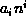.
Since n is non-negative,
a particular term will be negative only if  .
Hence, for each term in the summation, 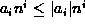.
Recall too that we have stipulated that the coefficient of the
largest power of n is positive, i.e.,
.
Hence, for each term in the summation, 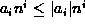.
Recall too that we have stipulated that the coefficient of the
largest power of n is positive, i.e.,  .
.
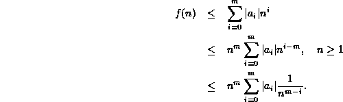
Note that for integers  ,
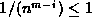 for 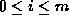. Thus
,
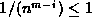 for 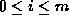. Thus
From Equation  we see that
we have found the constants 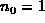 and 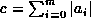,
such that for all
we see that
we have found the constants 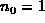 and 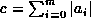,
such that for all  , 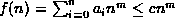.
Thus,
, 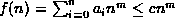.
Thus,  .
.
This property of the asymptotic behavior of polynomials
is used extensively.
In fact, whenever we have a function,
which is a polynomial in n,
 we will immediately ``drop'' the less significant terms
(i.e., terms involving powers of n which are less than m),
as well as the leading coefficient,
we will immediately ``drop'' the less significant terms
(i.e., terms involving powers of n which are less than m),
as well as the leading coefficient,  ,
to write
,
to write  .
.
 Copyright © 1997 by Bruno R. Preiss, P.Eng. All rights reserved.
Copyright © 1997 by Bruno R. Preiss, P.Eng. All rights reserved.